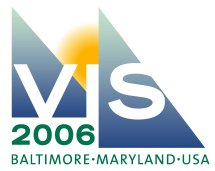

2006 IEEE Visualization Design Contest Submissions
There were six submissions to this contest. Links to the contents of the submissions are provided below. The winning submission and two honorable-mention submissions were announced at Vis 2006.